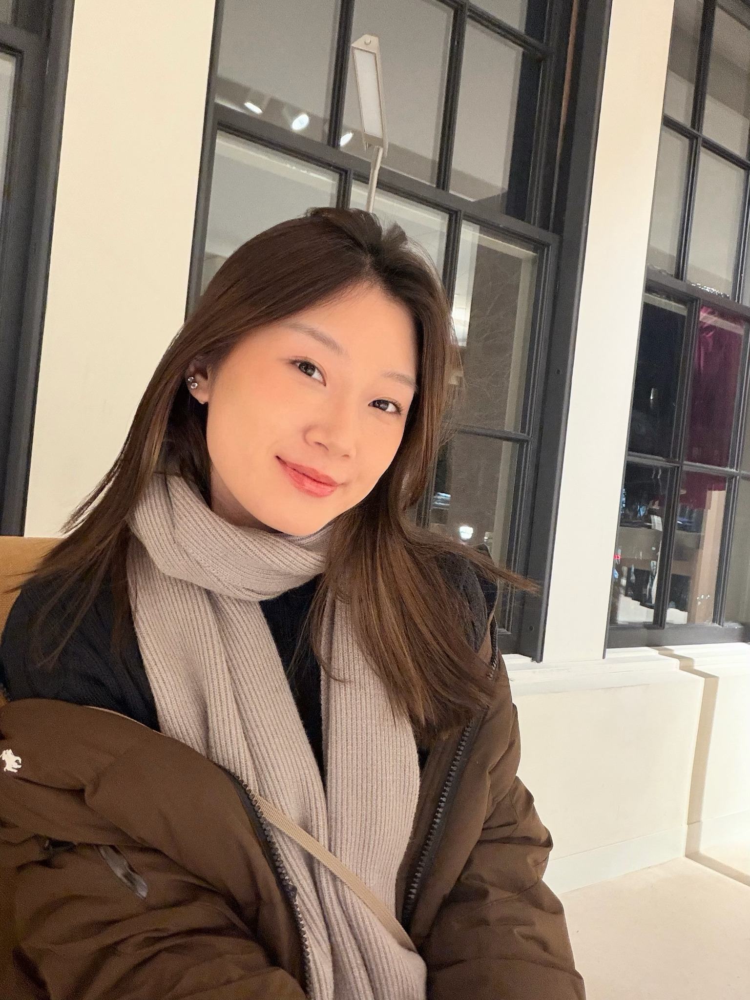

A PERSONAL ARCHIVE · 2025—2026
IT'S JUST ME.

EVERYTHINGSTILL IN
PROGRESS ✳
EDUCATION
Boston University
M.S. in Marketing Communication Research
Class of 2026
关于我，和我成为我的过程。
研究 · 设计 · 实践 · 探索SCROLL TO EXPLORE ↓
SCROLL TO BEGIN ↓
CHAPTERS / 01—02
每一年，
都有新的我。
把时间当作目录。移动到年份，看看那一年的我在忙什么；点击年份，打开对应的经历与作品。
MOVE YOUR CURSOR · FOLLOW THE YEARS
悬停年份，查看这一年的片段 · 点击年份，继续探索
SELECTED WORK / 202501 — 02
A NOTE ABOUT ME
不是一个标签，
而是很多个片段。
一个持续更新中的个人档案。
我喜欢在
创意与逻辑
之间寻找答案。
创意与逻辑
之间寻找答案。
我有市场传播研究的学术背景，也在内容运营、用户体验和产品相关项目中不断尝试。相比只做出一个漂亮的结果，我更好奇它为什么成立、用户会如何理解，以及下一步还能怎样变好。
这里不是一份静态简历，而是我目前走过的路。还有很多东西正在发生。
02YEARS IN VIEW
06SELECTED STORIES
∞IN PROGRESS